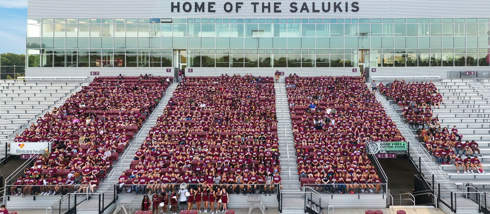

We are looking for group members with passion, talent, and grit. You will have the chance to work on basic and applied research at the intersection of cybersecurity, artificial intelligence, and distributed architecture. You'll actively contribute to defining significant and timely research questions, devising innovative scientific methodologies, constructing novel adversary models and defense mechanisms, and systematically evaluating them through rigorous experimental studies.
Funding note: we may not always have funding available for additional PhD, Master's, or BSc positions. During such periods, we can only accommodate applicants who have their own sponsorship, fellowship, or assistantship. We will be glad to support your application process once you apply to our group.
Applicants should hold a B.S. or M.S. degree in Computer Science, Electrical/Computer Engineering, or a closely related field. A solid foundation in programming, algorithms, and logic is expected, along with demonstrated problem-solving and critical-thinking skills. Candidates must also meet the graduate admission requirements of Southern Illinois University Carbondale.
While not required, prior research or industry experience in areas such as cybersecurity, cyber-physical systems (CPS), Internet of Things (IoT), artificial intelligence and machine learning (AI/ML), or blockchain will strengthen your application. Additional desirable qualifications include scholarly publications in conferences or journals, strong software engineering practices (version control, testing, reproducible workflows), and competitive GRE scores (with Quantitative ≥ 160).
Prospective students should email me with the subject line "Prospective PhD Student [Desired Semester and Year]" and include: curriculum vitae, unofficial transcripts (undergraduate and graduate, if applicable), a brief statement of research interest (max one page), GRE scores, and English proficiency scores (IELTS or TOEFL).
If you are a Master's or Bachelor's student in Computer Science at Southern Illinois University Carbondale interested in a research or thesis project, feel free to contact me (or any member of our group) by email or stop by my office (EGRA 409F).
If you are interested in pursuing a Master's degree at Southern Illinois University Carbondale, refer to the Graduate School admissions page . In some cases, we may host external Master's students for a thesis project or short research visit, provided they have their own funding and demonstrate exceptional qualifications.
